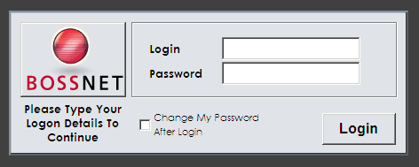

New slide
- What should I say?!
Steve Lane
Senior Biostatistics Officer


Table 1. Characteristics of the patients at baseline.
| Variable | Control Group | Intervention Group |
|---|---|---|
| Sex, n (%) | B | C |
| Age, year (IQR) | D | E |
| Current smoking, n (%) | F | G |
You won't be able to dismiss this by usual means (escape or click button), but you can close it programatically based on user choices or actions.
For more information you can contact.
gplushttp://plus.google.com
twitterhttp://twitter.com